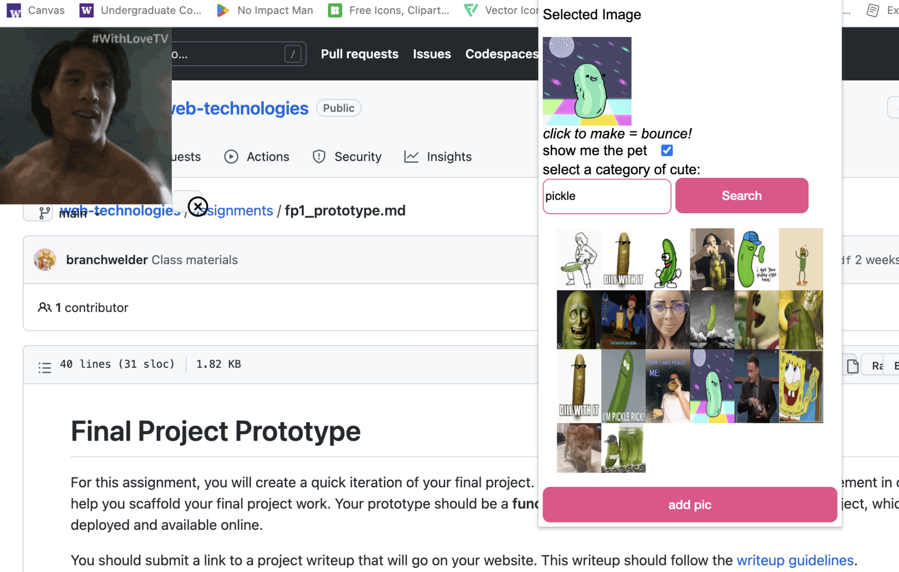
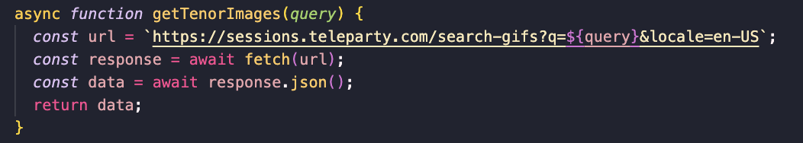

This is the writeup for my final project.

This is a demo of my final web extension project.
For my final version of my web extension, I added the capability of searching for the gif that the user would want to have bounce around their page. They can then pick from the available gifs, add the gif in, and make the gif bounce around the page for a nice study break. The purpose of the web extension is to bring a smile to the user's face and give them a brief distraction from work, without completely taking them from their flow of work as the web extension takes place on the page they were already on.
I didn't have too many errors as I set myself up pretty well with my prototype, but I did have this issue where the gif that was being added was not the same as the gif that I selected. Here is an example:
I researched online, and then asked some peers and my issue was a misspelling of the url. This was frustrating as the issue was a really simple fix, but it got solved pretty quickly.
